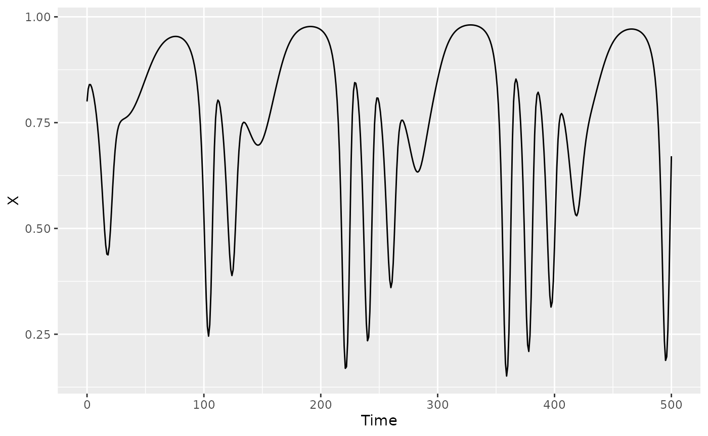

Choosing Embedding Parameters
choosingE.RmdIntroduction
One of the most common questions we get is how to choose the embedding dimension \(E\) and time delay \(\tau\) for a given time series. There is, unfortunately, no one correct way to do this. We detail below some general guidelines and different approaches that can be used to select these values.
The maximum embedding dimension that can be estimated for a time series of length \(T\) is approximately \(\sqrt{T}\) (Cheng and Tong 1992), so the largest \(E\) considered should not exceed this too greatly. The actual attractor dimension of the system may be higher, but the dimension you’re going to be able to resolve will be limited by time series length. You also may have valid reasons to limit the largest \(E\) considered to something less than \(\sqrt{T}\). Note that in multivariate models (e.g. those with covariates) \(E\) is the total number of predictors including lags, covariates, and lags of covariates. The total number of predictors should not exceed \(\sqrt{T}\), meaning you may need to use fewer lags if you add covariates to the model. For example, \(\{x_{t-1},x_{t-2},x_{t-3}\}\), \(\{x_{t-1},x_{t-2},y_{t-1}\}\), and \(\{x_{t-1},y_{t-1},z_{t-1}\}\) are all 3-dimensional embeddings (\(E=3\)).
In terms of selecting \(\tau\), fixing it to 1 can be a completely justifiable approach, particularly if your sampling interval is coarse relative to the dynamics of the system. However, if the sampling interval is fine, or the timescale of dynamics uncertain, you might wish to explore other values of \(\tau\). The generation time of the species under study (if longer than the sampling interval) can sometimes provide a good ballpark estimate for \(\tau\). However, keep in mind that \(E\tau\) data points will always be lost from the beginning of the time series, and obviously, the product \(E\tau\) cannot be larger than \(T\) (or in the case of multiple populations, larger than the shortest within-population time series length). You might wish to set some threshold for the product \(E\tau\) relative to \(T\), so that you end up with a sufficient number of valid delay vectors. For instance, when evaluating possible \(E\) and \(\tau\) values for S-map EDM, Rogers et al. (2022) required \(E≤\sqrt{T}\) and \(E\tau≤0.2T\) (i.e. you cannot remove more than 20% of the data points).
Once you have identified a space of reasonable \(E\) and \(\tau\) combinations to consider, there are a variety of methods you can use to select them (either independently or jointly). The supplement of Rogers et al. (2022) details several of these methods and their performance on simulated data with known \(E\) and \(\tau\). They found that the best method for S-map EDM was based on model forecast performance evaluated over a grid. GP-EDM, because it includes automatic relevance determination (ARD), enables some additional strategies for choosing \(E\) and \(\tau\). ARD eliminates uniformative lags, so can be used (in theory) to automatically identify \(E\) and choose the relevant time lags.
We present a few possible methods below, which are based on model performance. Note that performance must be evaluated out-of-sample, e.g. using leave-one-out cross validation, a training/test split, or some other method (which method to use will depend on how much data you have). In-sample performance will always increase as \(E\) increases, but out-of-sample performance will cease to improve substantially once the optimal \(E\) is reached.
Because real data are rarely as cooperative as models, we present both a model example (noise-free, 3 species Hastings-Powell model) and a real data example (shortfin squid mean catch-per-unit-effort from a bottom trawl survey in the Gulf of Maine) for each method.
1. Grid search method
Evaluate all possible models and select the best performing. For instance, Rogers et al. (2022) found that the best approach in S-map EDM was to evaluate all possible combinations of \(E\), \(\tau\), and the S-map local weighting parameter \(\theta\) and choose the one with the highest out-of-sample \(R^2\). Recognizing that multiple models can have identical or near identical fits, they considered any models that differed by less than 0.01 in \(R^2\) to be equivalent, and selected among the highest-performing equivalent models, the one with the lowest \(\tau\), \(\theta\), and \(E\) (in that order), so as to prioritize simpler, more linear models. One could use other thresholds or criteria for ‘equivalency’ than this one though. Determining which models are equivalent and ranking them is particularly relevant for model data with little to no noise, where many different models can have high fit statistics, but can happen with real data as well, where there is not a clear ‘winner’ among the candidate models.
In the context of GP-EDM, there is no \(\theta\) to estimate: the inverse length
scales (phi values) determine the curvature similarly to
‘local weighting’ parameters, but there is one phi for each
input (rather than one \(\theta\) for
all inputs) and the values are optimized in each model. Thus, \(E\) and \(\tau\) are the only hyperparameters that
need to be determined.
Hastings Powell model
Since we have plenty of simulated data, we’ll split the time series into a training and testing set, each of 200 points. To ensure that the out-of-sample \(R^2\) is evaluated over the same test set regardless of \(E\) and \(\tau\) (the first \(E\tau\) points of the test dataset are not eliminated), we generate the lags beforehand (see the last example in this section of the readme). With 200 points, we could consider \(E\) up to 14, but since we know that is far higher than necessary for this model system, we’ll set max \(E\) to 8 to save some time.
We find that \(E=2\) and \(\tau=1\) are sufficient here. This is a continuous time model with an integration step size of 1, so it is also not surprising that higher \(\tau\) values work well as long as \(E\) is at least 2.
#we'll just consider the X variable
qplot(y=X, x=Time, data=HastPow3sp, geom = "line")
#> Warning: `qplot()` was deprecated in ggplot2 3.4.0.
#> This warning is displayed once every 8 hours.
#> Call `lifecycle::last_lifecycle_warnings()` to see where this warning was
#> generated.
#create grid of E and tau to consider
Emax=8
taumax=3
Etaugrid=expand.grid(E=1:Emax,tau=1:taumax)
Etaugrid$R2=NA
#generate all lags
HPlags=makelags(HastPow3sp,"X",E=Emax*taumax, tau=1, append=T)
#split training and test
HP_train=HPlags[1:200,]
HP_test=HPlags[201:400,]
#loop through the grid
for(i in 1:nrow(Etaugrid)) {
#fit model with ith combo of E and tau
demo=fitGP(data=HP_train,
y="X",
x=paste0("X_",Etaugrid$tau[i]*(1:Etaugrid$E[i])),
time="Time",
newdata = HP_test)
#store out of sample R2
Etaugrid$R2[i]=demo$outsampfitstats["R2"]
}
ggplot(Etaugrid, aes(x=E, y=tau, fill=R2)) +
geom_tile() + theme_classic() +
scale_y_continuous(expand = c(0, 0), breaks = 1:taumax) +
scale_x_continuous(expand = c(0, 0), breaks = 1:Emax) +
scale_fill_gradient2() +
theme(panel.background = element_rect(fill="gray"),
panel.border = element_rect(color="black", fill="transparent"))
Etaugrid$R2round=round(Etaugrid$R2,2)
#if not aleady in order
#Etaugrid=Etaugrid[order(Etaugrid$tau,Etaugrid$E),]
(bestE=Etaugrid$E[which.max(Etaugrid$R2round)])
#> [1] 2
(besttau=Etaugrid$tau[which.max(Etaugrid$R2round)])
#> [1] 1
demo=fitGP(data=HP_train, y="X",
x=paste0("X_",besttau*(1:bestE)),
time="Time", newdata = HP_test)
summary(demo)
#> Number of predictors: 2
#> Length scale parameters:
#> predictor posteriormode
#> phi1 X_1 0.21716
#> phi2 X_2 0.33140
#> Process variance (ve): 0.0001761443
#> Pointwise prior variance (sigma2): 4.365049
#> Number of populations: 1
#> In-sample R-squared: 0.9998473
#> Out-of-sample R-squared: 0.9979118
plot(demo)
#> Plotting out of sample results.
Squid data
This is 44 year annual time series, thus the max \(E\) should be about 6 or 7. The squid
species being sampled has an annual life history, so tau=1
would make the most biological sense. Just for demonstration purposes,
we set the max \(\tau\) to 3. To
provide a more complex example in which the predictor and response
variables are different, we will model growth rate as a function of log
abundance (we will need to generate the lags beforehand, option 1 in Specifying
training data). Because the time series is relatively short, we will
use leave-one-out to evaluate performance.
We find that \(\tau=1\) is clearly the best, and \(E=6\) produces the best performance, although only minorly over \(E=4\) (they differ in \(R^2\) by only 0.0102). You would be justified in selecting either \(E=4\) or \(E=6\), perhaps going for the smaller one if you were interested in parsimony.
#we'll just consider one population for this example
data(trawl)
squid=subset(trawl,REGION=="GME")
qplot(y=shortfin_squid, x=YEAR, data=squid, geom = "line")
#growth rate and log abundance
squid$squidlog=log(squid$shortfin_squid)
squid$squidgr=c(NA,(diff(squid$squidlog)))
#time series length
serlen=nrow(squid)
#create grid of E and tau to consider
Emax=6
taumax=3
Etaugrid=expand.grid(E=1:Emax,tau=1:taumax)
#remove E and tau combinations that lose too much data (other critera could be used)
Etaugrid=subset(Etaugrid, Etaugrid$E^2<=serlen & Etaugrid$E*Etaugrid$tau/serlen<=0.2)
Etaugrid$R2=NA
#generate all lags
squidlags=makelags(squid,"squidlog",E=Emax*taumax, tau=1, append=T)
#loop through the grid
for(i in 1:nrow(Etaugrid)) {
#fit model with ith combo of E and tau
demo=fitGP(data=squidlags,
y="squidgr",
x=paste0("squidlog_",Etaugrid$tau[i]*(1:Etaugrid$E[i])),
time="YEAR",
predictmethod = "loo")
#store out of sample R2
Etaugrid$R2[i]=demo$outsampfitstats["R2"]
}
ggplot(Etaugrid, aes(x=E, y=tau, fill=R2)) +
geom_tile() + theme_classic() +
scale_y_continuous(expand = c(0, 0), breaks = 1:taumax) +
scale_x_continuous(expand = c(0, 0), breaks = 1:Emax) +
scale_fill_gradient2() +
theme(panel.background = element_rect(fill="gray"),
panel.border = element_rect(color="black", fill="transparent"))
Etaugrid$R2round=round(Etaugrid$R2,2)
#if not aleady in order
#Etaugrid=Etaugrid[order(Etaugrid$tau,Etaugrid$E),]
(bestE=Etaugrid$E[which.max(Etaugrid$R2round)])
#> [1] 6
(besttau=Etaugrid$tau[which.max(Etaugrid$R2round)])
#> [1] 1
demo=fitGP(data=squidlags, y="squidgr",
x=paste0("squidlog_",besttau*(1:bestE)),
time="YEAR",
predictmethod = "loo")
summary(demo)
#> Number of predictors: 6
#> Length scale parameters:
#> predictor posteriormode
#> phi1 squidlog_1 0.04734
#> phi2 squidlog_2 0.24373
#> phi3 squidlog_3 0.06569
#> phi4 squidlog_4 0.00746
#> phi5 squidlog_5 0.02067
#> phi6 squidlog_6 0.00130
#> Process variance (ve): 0.203274
#> Pointwise prior variance (sigma2): 2.647853
#> Number of populations: 1
#> In-sample R-squared: 0.8892768
#> Out-of-sample R-squared: 0.5833364
plot(demo)
#> Plotting out of sample results.This grid search method of selecting models, while thorough, can be very time consuming. There are some potentially more efficient ways to arrive at the same answer, described below.
2. Increase E method
Increase \(E\) until performance no
longer increases substantially (fixing \(\tau\) to 1 or some other reasonable
minimum value). ARD will drop lags that are uninformative (set
phi to 0 for those lags), allowing for a larger ‘realized’
\(\tau\), as well as unequal lag
spacing. You might notice that the set of relevant lags changes as \(E\) increases (e.g. lag 2 is important when
\(E=2\), but not when \(E=4\)). This behavior is normal and occurs
because lags sometimes provide redundant information, and thus the model
will identify different lags as relevant depending on the set
available.
Once you identify the \(E\) with the
best performance, should you go back and drop lags that were deemed
uninformative (had phi values of 0)? You could do this if
you want, though it’s not strictly necessary. This would result in a
model with a smaller ‘realized’ \(E\)
and some mixture of lag spacing. The model performance will probably not
change; however, beware that lags with small but non-zero
phi values can sometimes be influential, and performance
might decline if they are excluded. The summary function
rounds phi values, so values that appear to be 0 might not
actually be.
Hastings Powell model
Here, we can clearly see that \(E=2\) is sufficient.
Emax=8
R2vals=numeric(Emax)
for(i in 1:Emax) {
demo=fitGP(data=HP_train, y="X",
x=paste0("X_",(1:i)),
time="Time", newdata = HP_test)
R2vals[i]=demo$outsampfitstats["R2"]
#print(i)
print(round(demo$pars[1:i],6))
}
#> phi1
#> 0.020154
#> phi1 phi2
#> 0.217163 0.331399
#> phi1 phi2 phi3
#> 0.063912 0.056489 0.011711
#> phi1 phi2 phi3 phi4
#> 0.066353 0.049745 0.000000 0.004594
#> phi1 phi2 phi3 phi4 phi5
#> 0.056124 0.000000 0.038560 0.000000 0.008030
#> phi1 phi2 phi3 phi4 phi5 phi6
#> 0.055719 0.000000 0.037928 0.000000 0.008687 0.000000
#> phi1 phi2 phi3 phi4 phi5 phi6 phi7
#> 0.055749 0.000000 0.038347 0.000000 0.008479 0.000000 0.000000
#> phi1 phi2 phi3 phi4 phi5 phi6 phi7 phi8
#> 0.046518 0.000000 0.000471 0.000471 0.033521 0.012773 0.002145 0.000000
plot(1:Emax, R2vals, type="o")
Squid data
As before, you would be justified in selecting either \(E=4\) or \(E=6\) in this case. We can see that the
inverse length scale phi for lag 6 is quite small, so it is
not providing much information.
Emax=6
squidlags=makelags(squid,"squidlog",E=Emax, tau=1, append = T)
R2vals=numeric(Emax)
for(i in 1:Emax) {
demo=fitGP(data=squidlags,
y="squidgr",
x=paste0("squidlog_",(1:i)),
time="YEAR",
predictmethod = "loo")
R2vals[i]=demo$outsampfitstats["R2"]
#print(i)
print(round(demo$pars[1:i],6))
}
#> phi1
#> 0.035776
#> phi1 phi2
#> 0.035482 0.000000
#> phi1 phi2 phi3
#> 0.046410 0.193942 0.031216
#> phi1 phi2 phi3 phi4
#> 0.061337 0.292041 0.044430 0.124112
#> phi1 phi2 phi3 phi4 phi5
#> 0.062538 0.307994 0.049649 0.077748 0.000000
#> phi1 phi2 phi3 phi4 phi5 phi6
#> 0.047337 0.243734 0.065694 0.007457 0.020671 0.001297
plot(1:Emax, R2vals, type="o")
3. Max E method
Set \(E\) to the maximum value (fixing \(\tau\) to 1 or some other reasonable minimum value), and let ARD eliminate all lags that are uninformative. Because performance plateaus, performance of the resulting model will be equivalent to model with the optimal \(E\). Pros: You only have to fit one model. Cons: The model may include more lag predictors than are strictly necessary, and you may be eliminating more training data points (product \(E\tau\)) than are necessary. You could look at the inverse length scales from the “max E” model, and if you see all lags above some \(E^*\) have values of 0, then \(E^*\) is the embedding dimension, and you would be justified in refitting the model with higher lags removed (performance should not change, because the higher lags weren’t contributing anything). This doesn’t always happen though.
Hastings Powell model
Emax=8
demo=fitGP(data=HP_train, y="X", x=paste0("X_",(1:Emax)), time="Time", newdata = HP_test)
summary(demo)
#> Number of predictors: 8
#> Length scale parameters:
#> predictor posteriormode
#> phi1 X_1 0.04652
#> phi2 X_2 0.00000
#> phi3 X_3 0.00047
#> phi4 X_4 0.00047
#> phi5 X_5 0.03352
#> phi6 X_6 0.01277
#> phi7 X_7 0.00214
#> phi8 X_8 0.00000
#> Process variance (ve): 0.0001000025
#> Pointwise prior variance (sigma2): 4.087007
#> Number of populations: 1
#> In-sample R-squared: 0.9999973
#> Out-of-sample R-squared: 0.9998047Squid data
Emax=6
demo=fitGP(data=squidlags, y="squidgr", x=paste0("squidlog_",(1:Emax)),
time="YEAR", predictmethod = "loo")
summary(demo)
#> Number of predictors: 6
#> Length scale parameters:
#> predictor posteriormode
#> phi1 squidlog_1 0.04734
#> phi2 squidlog_2 0.24373
#> phi3 squidlog_3 0.06569
#> phi4 squidlog_4 0.00746
#> phi5 squidlog_5 0.02067
#> phi6 squidlog_6 0.00130
#> Process variance (ve): 0.203274
#> Pointwise prior variance (sigma2): 2.647853
#> Number of populations: 1
#> In-sample R-squared: 0.8892768
#> Out-of-sample R-squared: 0.5833364Inconsistency, ambiguity, and getting the ‘right’ answer
We suggest not worrying too much about whether you have exactly the right \(E\), or if the inverse length scales vary among models. Many delay embedding models can have equivalent performance (particularly with multivariate predictors), and there is often no way to tell which is the ‘right’ one. Ideally, your results should be robust to minor differences in \(E\), and you can conduct a sensitivity analysis if you are concerned. If you’re wanting to make inference based on the hyperparameters, including \(E\) and the inverse length scales, more care should be taken in terms of model selection. If all you care about is forecasting, it’s not worth fussing over too much, and the “max E” approach might be sufficient.
There is no formula, so if in doubt, try multiple approaches and see what you get. Sometimes you have to make a judgement call based on what seems the most reasonable or parsimonious for your analysis goals.
Best practices and common pitfalls
Always plot your time series (training and test) before fitting a model.
Do not forget the
popargument when generating lags for multi-population data, otherwise there will be crossover between time series.Poor or strange results can be obtained if the test dataset is too short, has insufficient variance, or is very inconsistent among candidate models. Inconsistency usually arises due to the first \(E\tau\) timepoints being removed as \(E\) and \(\tau\) change, which for short test time series, can result in substantial changes to the baseline variance of the values being predicted across candidate models.
When you have multiple populations, you have to consider the time series length within populations, as well as the number of delay vectors across all populations, when thinking about how much training/test data you have for a given \(E\) and \(\tau\) value.
You may find that performance results differ depending on the train/test split used. Consider using
loo,lto, orsequentialsampling in these cases instead of a split, particularly for short time series, or another form of n-fold cross validation.